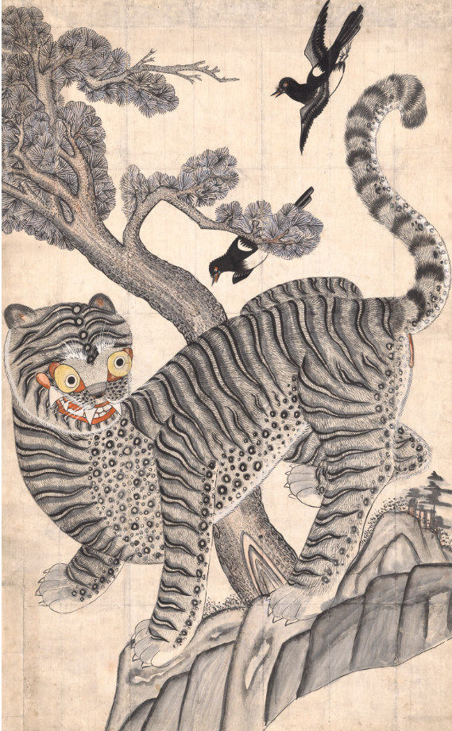

호작도
얼굴무늬 수막새
‘경주 얼굴무늬 수막새’는 ‘신라의 미소’라고 널리 소개된 신라시대 원와당(圓瓦當)으로,
일제시기 경주 사정리(沙正里, 현 사정동)에서 출토된 것으로 알려져 있다.
이 수막새는 1934년 일본인 다나카 도시노부(田中敏信)가 골동상점에서 구입하여
당시부터 고고학술 자료를 통해 존재가 알려졌으며, 이후 일본으로 반출되었으나
1972년 10월 국내에 반환되었다.

백제금동대향로